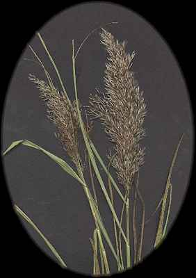
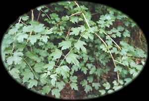

Ngetal
Reed (October 28 - November 24)

Reed - The term "reed" is used with great imprecision in North America, but it is clear that the reed of the ogham is the common reed (Phragmites australis (Cav.) Trin. ex Steudel). This is a giant grass, with stems as high as 12 feet. It grows in marshy areas, where it often forms dense stands. Like most other grasses, the vertical stems live only a single year, dying in the autumn and being replaced with new green shoots in the spring. The dead stems rattle and whisper in late autumn winds. Common reed has spread as a weed throughout the world; in North America it is widespread in cooler climates. Common reed is in the Grass family (Poaceae, or Gramineae). Curtis Clark

Guelder Rose or Water Elder (no relation to the true Elder) has the most beautiful clusters of translucent red berries during the late Autumn, around the time of Samhain, so making it a good substitute "tree" for Ngetal - The Reed
